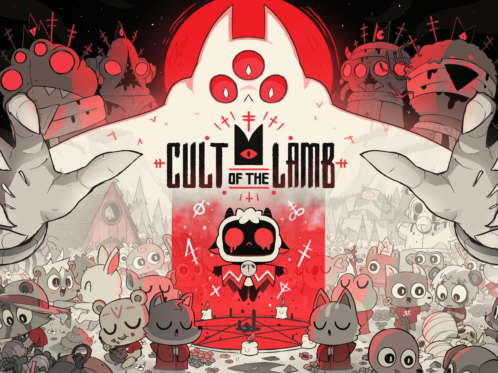

Sobre o jogo
Cult of the Lamb é um jogo de aventura e estratégia desenvolvido pela Massive Monster. Nele, controlamos um cordeiro que precisa construir e liderar seu próprio culto.
Durante a aventura, o jogador explora masmorras, enfrenta inimigos, coleta recursos e cuida dos seguidores. O jogo mistura elementos de ação, exploração e gerenciamento.

Cartão de apresentação
Cult of the Lamb
Gênero: Aventura e estratégia
Desenvolvedora: Massive Monster
Objetivo: Construir e liderar um culto, conquistar seguidores e explorar masmorras.